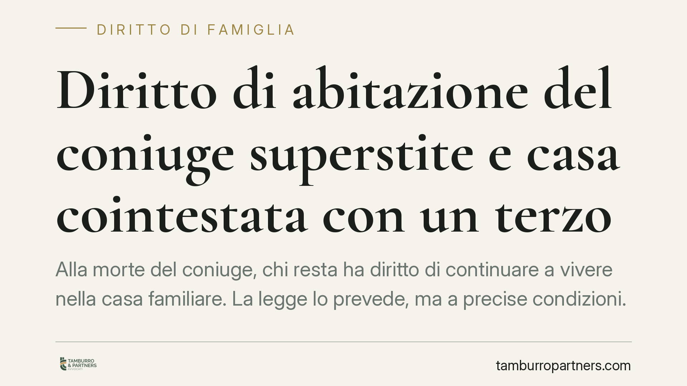

Diritto di abitazione del coniuge superstite e casa cointestata con un terzo
Alla morte del coniuge, chi resta ha diritto di continuare a vivere nella casa familiare. La legge lo prevede, ma a precise condizioni. Se l'immobile è cointestato con un soggetto diverso dal coniuge, per esempio un ex partner, il diritto di abitazione può non sorgere. Vediamo perché e quali verifiche compiere prima di dare per acquisita questa tutela.

Il presupposto: di chi era la casa
Il diritto di abitazione del coniuge superstite è disciplinato dall'art. 540, secondo comma, del codice civile. La norma riserva al coniuge sopravvissuto il diritto di abitazione sulla casa adibita a residenza familiare e di uso sui mobili che la corredano, purché di proprietà del defunto o comuni tra i coniugi.
È importante distinguere due situazioni. Il diritto di abitazione è un diritto reale di godimento: consente di vivere nell'immobile, ma non attribuisce la proprietà. La proprietà segue invece le ordinarie regole della successione. Il coniuge può quindi essere titolare del diritto di abitare la casa pur senza esserne (o senza esserne interamente) proprietario.
La condizione critica: il terzo comproprietario
Il punto delicato è il presupposto oggettivo. L'art. 540, secondo comma, richiede che la casa sia di proprietà esclusiva del defunto o in comunione tra i coniugi. Se l'immobile appartiene, in tutto o in parte, a un soggetto estraneo al matrimonio, il diritto di abitazione non sorge.
È il caso, tutt'altro che raro, dell'appartamento acquistato in comproprietà con un ex coniuge o ex convivente e mai diviso dopo la separazione. Chi si risposa e va a vivere in quella casa lascia, alla propria morte, un nuovo coniuge che si trova a convivere con la quota di proprietà del terzo. In questa configurazione il diritto di abitazione, secondo l'orientamento della Cassazione, resta escluso.
Perché la legge esclude questa tutela
La ragione è tecnica, ma comprensibile. Il diritto reale di abitazione ha natura indivisibile: grava sull'intero immobile, non su una frazione ideale. Riconoscerlo quando esiste un terzo comproprietario significherebbe imporre a quest'ultimo un peso sulla sua quota, comprimendone il godimento e il valore senza alcuna base legale.
Il legislatore ha quindi ancorato la tutela del coniuge superstite a un presupposto rigoroso: l'immobile deve rientrare interamente nella sfera dei coniugi. Diversamente, la protezione della residenza familiare cederebbe di fronte al diritto di proprietà di chi al matrimonio è estraneo. Su questa lettura si registra un orientamento consolidato della giurisprudenza di legittimità.
*[Nota redazionale: inserire in pubblicazione gli estremi della sentenza pilota di riferimento, numero/anno/sezione, previa verifica sulla banca dati.]*
Cosa cambia per chi eredita
Per il coniuge superstite la differenza è sostanziale. Se il presupposto manca, non può opporre un diritto di abitazione al comproprietario, che resta libero di chiedere la divisione dell'immobile e, in mancanza di accordo, la vendita all'asta con ripartizione del ricavato.
È una circostanza spesso ignorata da chi acquista casa in gioventù con un partner, poi si separa senza sciogliere la comproprietà e forma una nuova famiglia. La quota rimasta in capo all'ex partner sopravvive a ogni vicenda successiva e condiziona i diritti del nuovo coniuge.
Cosa fare in concreto
- Verificare la titolarità dell'immobile con una visura catastale e ipotecaria aggiornata, individuando esattamente le quote di proprietà.
- Controllare la posizione degli ex coniugi o ex conviventi: accertare se una precedente comproprietà sia stata sciolta o sia ancora in essere.
- Distinguere la comunione legale tra coniugi dalla comproprietà ordinaria con un terzo: solo la prima integra il presupposto dell'art. 540 c.c.
- Ricostruire l'asse ereditario prima di formalizzare accettazioni di eredità o accordi di divisione, così da valutare l'effettiva consistenza dei diritti.
- Considerare l'opportunità di un approfondimento tecnico quando l'immobile è cointestato con soggetti estranei al nucleo familiare attuale.
Domande frequenti
Il diritto di abitazione del coniuge superstite spetta sempre?
No. Spetta solo se la casa era di proprietà esclusiva del defunto o in comunione tra i coniugi. La presenza di un terzo comproprietario lo esclude.
Vale anche se il terzo è l'ex coniuge del defunto?
Sì. Se la comproprietà con l'ex non è stata sciolta, quella quota resta a un soggetto estraneo al secondo matrimonio e impedisce il sorgere del diritto.
Il coniuge può comunque restare nella casa?
Solo in forza della propria quota di proprietà o di un accordo con gli altri comproprietari, non in virtù del diritto di abitazione.
Ogni famiglia ha il suo equilibrio.
Separazione, divorzio, affidamento, assegno: se vuoi un confronto riservato su una specifica situazione, scrivi allo studio. Ti rispondiamo entro un giorno lavorativo.